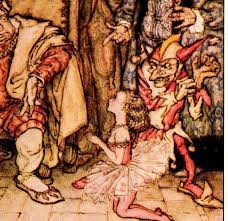

Hop-Frog
(published 1849)
(No theme recorded)

He seemed to live only for joking.Thus it happened that his seven ministers were all noted for their accomplishments as jokers. They all took after the, too, in being large, corpulent, oily men, as well as inimitable jokers. Whether people grow fat by joking, or whether there is something in fat itself which predisposes to a joke, I have never been quite able to determine; but certain it is that a lean joker is a rara avis in terris. To tell a good story of the joke kind, and to tell it well, was the surest road to his favor.
He had an especial admiration for breadth in a jest, and would often put up with length, for the sake of it. Over-niceties wearied him. He would have preferred Rabelais' 'Gargantua' to the 'Zadig' of Voltaire: and, upon the whole, practical jokes suited his taste far better than verbal ones.
His fool, or professional jester, was not only a fool, however. His value was trebled in the eyes of the, by the fact of his being also a dwarf and a cripple. Dwarfs were as common at court, in those days, as fools; and many monarchs would have found it difficult to get through their days (days are rather longer at court than elsewhere) without both a jester to laugh with, and a dwarf to laugh at.
I believe the name '' was not that given to the dwarf by his sponsors at baptism, but it was conferred upon him, by general consent of the several ministers, on account of his inability to walk as other men do.
But although Hop-Frog , through the distortion of his legs, could move only with great pain and difficulty along a road or floor, the prodigious muscular power which nature seemed to have bestowed upon his arms, by way of compensation for deficiency in the lower limbs, enabled him to perform many feats of wonderful dexterity, where trees or ropes were in question, or any thing else to climb. At such exercises he certainly much more resembled a squirrel, or a small monkey, than a frog.
I am not able to say, with precision, from what country originally came. , and a young girl very little less dwarfish than himself (although of exquisite proportions, and a marvellous dancer), had been forcibly carried off from their respective homes in adjoining provinces, and sent as presents to the, by one of his ever-victorious generals. It was from some barbarous region, however, that no person ever heard of -- a vast distance from the court of our king .
Under these circumstances, it is not to be wondered at that a close intimacy arose between the two little captives., who, although he made a great deal of sport, was by no means popular, had it not in his power to render many services; but she, on account of her grace and exquisite beauty (although a dwarf), was universally admired and petted; so she possessed much influence; and never failed to use it, whenever she could, for the benefit of .
On some grand state occasion -- I forgot what -- the determined to have a masquerade, and whenever a masquerade or any thing of that kind, occurred at our court, then the talents, both of and were sure to be called into play. Hop-Frog, in especial, was so inventive in the way of getting up pageants, suggesting novel chars, and arranging costumes, for masked balls, that nothing could be done, it seems, without his assistance.
The night appointed for the fete had arrived. A gorgeous hall had been fitted up, under eye, with every kind of device which could possibly give eclat to a masquerade. The whole court was in a fever of expectation. As for costumes and chars, it might well be supposed that everybody had come to a decision on such points. Many had made up their minds (as to what roles they should assume) a week, or even a month, in advance; and, in fact, there was not a particle of indecision anywhere -- except in the case of the and his seven minsters. Why they hesitated I never could tell, unless they did it by way of a joke. More probably, they found it difficult, on account of being so fat, to make up their minds.
. He knew that was not fond of wine, for it excited the poor cripple almost to madness; and madness is no comfortable feeling. But the loved his practical jokes, and took pleasure in forcing to drink and (as the called it) 'to be merry.' When the two little friends obeyed the summons of the king they found him sitting at his wine with the seven members of his cabinet council; but the monarch appeared to be in a very ill humor
said he, as the jester and his friend entered the room;
endeavored, as usual, to get up a jest in reply to these advances from the; but the effort was too much. . Many large, bitter drops fell into the goblet as he took it, humbly, from the hand of the tyrant
roared the latter, as the dwarf reluctantly drained the beaker. --
They all seemed highly amused at the success of the 'joke.' Poor fellow! his large eyes gleamed, rather than shone; for the effect of wine on his excitable brain was not more powerful than instantaneous. He placed the goblet nervously on the table, and looked round upon the company with a half -- insane stare.
said the prime minister, a very fat man.
said the ; and as this was seriously meant for a joke, his laugh was chorused by the seven.
also laughed although feebly and somewhat vacantly.
said the, impatiently,
replied the dwarf, abstractedly, for he was quite bewildered by the wine.
cried the tyrant, fiercely; and he poured out another goblet full and offered it to the cripple, who merely gazed at it, gasping for breath.
shouted the monster,
The dwarf hesitated. The grew purple with rage. The courtiers smirked. Trippetta, pale as a corpse, advanced to the monarch's seat, and, falling on her knees before him, implored him to spare her friend.
The tyrant regarded her, for some moments, in evident wonder at her audacity. He seemed quite at a loss what to do or say -- how most becomingly to express his indignation. At last, without uttering a syllable, he pushed her violently from him, and threw the contents of the brimming goblet in her face.
The poor girl got up the best she could, and, not daring even to sigh, resumed her position at the foot of the table.
There was a dead silence for about half a minute, during which the falling of a leaf, or of a feather, might have been heard.It was interrupted by a low, but harsh and protracted grating sound which seemed to come at once from every corner of the room.
demanded the, turning furiously to the dwarf.
The latter seemed to have recovered, in great measure, from his intoxication, and looking fixedly but quietly into the tyrant's face, merely ejaculated:
observed one of the courtiers.
replied the monarch, as if much relieved by the suggestion;
Hereupon the dwarf laughed (the was too confirmed a joker to object to any one's laughing), and displayed a set of large, powerful, and very repulsive teeth. Moreover, he avowed his perfect willingness to swallow as much wine as desired. The monarch was pacified; and having drained another bumper with no very perceptible ill effect, entered at once, and with spirit, into the plans for the masquerade.
observed he, very tranquilly, and as if he had never tasted wine in his life,
cried the, laughing at his acute discovery of the coincidence;
replied the cripple,
remarked the, drawing himself up, and lowering his eyelids.
continued ,
roared in chorus the monarch and his ministry.
proceeded the dwarf;
exclaimed the.
said the: and the council arose hurriedly (as it was growing late), to put in execution the scheme of .
His mode of equipping the party as ourang-outangs was very simple, but effective enough for his purposes. The animals in question had, at the epoch of my story, very rarely been seen in any part of the civilized world; and as the imitations made by the dwarf were sufficiently beast-like and more than sufficiently hideous, their truthfulness to nature was thus thought to be secured.
The and his ministers were first encased in tight-fitting stockinet shirts and drawers. They were then saturated with tar. At this stage of the process, some one of the party suggested feathers; but the suggestion was at once overruled by the dwarf, who soon convinced the eight, by ocular demonstration, that the hair of such a brute as the ourang-outang was much more efficiently represented by flax. A thick coating of the latter was accordingly plastered upon the coating of tar. A long chain was now procured. First, it was passed about the waist of the, and tied, then about another of the party, and also tied; then about all successively, in the same manner. When this chaining arrangement was complete, and the party stood as far apart from each other as possible, they formed a circle; and to make all things appear natural, passed the residue of the chain in two diameters, at right angles, across the circle, after the fashion adopted, at the present day, by those who capture Chimpanzees, or other large apes, in Borneo.
The grand saloon in which the masquerade was to take place, was a circular room, very lofty, and receiving the light of the sun only through a single window at top. At night (the season for which the apartment was especially designed) it was illuminated principally by a large chandelier, depending by a chain from the centre of the sky-light, and lowered, or elevated, by means of a counter-balance as usual; but (in order not to look unsightly) this latter passed outside the cupola and over the roof.
The arrangements of the room had been left to superintendence; but, in some particulars, it seems, she had been guided by the calmer judgment of her friend the dwarf. At his suggestion it was that, on this occasion, the chandelier was removed. Its waxen drippings (which, in weather so warm, it was quite impossible to prevent) would have been seriously detrimental to the rich dresses of the guests, who, on account of the crowded state of the saloon, could not all be expected to keep from out its centre; that is to say, from under the chandelier. Additional sconces were set in various parts of the hall, out of the war, and a flambeau, emitting sweet odor, was placed in the right hand of each of the Caryatides that stood against the wall -- some fifty or sixty altogether.
No sooner had the clock ceased striking, however, than they rushed, or rather rolled in, all together -- for the impediments of their chains caused most of the party to fall, and all to stumble as they entered. The eight ourang-outangs, taking Hop-Frog's advice, waited patiently until midnight (when the room was thoroughly filled with masqueraders) before making their appearance.
The excitement among the masqueraders was prodigious, and filled the heart of the with glee. As had been anticipated, there were not a few of the guests who supposed the ferocious-looking creatures to be beasts of some kind in reality, if not precisely ourang-outangs. Many of the women swooned with affright; and had not the taken the precaution to exclude all weapons from the saloon, his party might soon have expiated their frolic in their blood. As it was, a general rush was made for the doors; but the had ordered them to be locked immediately upon his entrance; and, at the dwarf's suggestion, the keys had been deposited with him.
While the tumult was at its height, and each masquerader attentive only to his own safety (for, in fact, there was much real danger from the pressure of the excited crowd), the chain by which the chandelier ordinarily hung, and which had been drawn up on its removal, might have been seen very gradually to descend, until its hooked extremity came within three feet of the floor.
Soon after this, the and his seven friends having reeled about the hall in all directions, found themselves, at length, in its centre, and, of course, in immediate contact with the chain. While they were thus situated, the dwarf, who had followed noiselessly at their heels, inciting them to keep up the commotion, took hold of their own chain at the intersection of the two portions which crossed the circle diametrically and at right angles. Here, with the rapidity of thought, he inserted the hook from which the chandelier had been wont to depend; and, in an instant, by some unseen agency, the chandelier-chain was drawn so far upward as to take the hook out of reach, and, as an inevitable consequence, to drag the ourang-outangs together in close connection, and face to face.
The masqueraders, by this time, had recovered, in some measure, from their alarm; and, beginning to regard the whole matter as a well-contrived pleasantry, set up a loud shout of laughter at the predicament of the apes.
now screamed , his shrill voice making itself easily heard through all the din.
Here, scrambling over the heads of the crowd, he managed to get to the wall; when, seizing a flambeau from one of the Caryatides, he returned, as he went, to the centre of the room-leaping, with the agility of a monkey, upon thes head, and thence clambered a few feet up the chain; holding down the torch to examine the group of ourang-outangs, and still screaming:
And now, while the whole assembly (the apes included) were convulsed with laughter, the jester suddenly uttered a shrill whistle; when the chain flew violently up for about thirty feet -- dragging with it the dismayed and struggling ourang-outangs, and leaving them suspended in mid-air between the sky-light and the floor. , clinging to the chain as it rose, still maintained his relative position in respect to the eight maskers, and still (as if nothing were the matter) continued to thrust his torch down toward them, as though endeavoring to discover who they were.
So thoroughly astonished was the whole company at this ascent, that a dead silence, of about a minute's duration, ensued. It was broken by just such a low, harsh, grating sound, as had before attracted the attention of the and his councillors when the former threw the wine in the face of . But, on the present occasion, there could be no question as to whence the sound issued. It came from the fang-like teeth of the dwarf, who ground them and gnashed them as he foamed at the mouth, and glared, with an expression of maniacal rage, into the upturned countenances of the and his seven companions.
said at length the infuriated jester. Here, pretending to scrutinize the more closely, he held the flambeau to the flaxen coat which enveloped him, and which instantly burst into a sheet of vivid flame. In less than half a minute the whole eight ourang-outangs were blazing fiercely, amid the shrieks of the multitude who gazed at them from below, horror-stricken, and without the power to render them the slightest assistance.
At length the flames, suddenly increasing in virulence, forced the jester to climb higher up the chain, to be out of their reach; and, as he made this movement, the crowd again sank, for a brief instant, into silence. The dwarf seized his opportunity, and once more spoke:
he said,
Owing to the high combustibility of both the flax and the tar to which it adhered, the dwarf had scarcely made an end of his brief speech before the work of vengeance was complete. The eight corpses swung in their chains, a fetid, blackened, hideous, and indistinguishable mass. The cripple hurled his torch at them, clambered leisurely to the ceiling, and disappeared through the sky-light.
It is supposed that , stationed on the roof of the saloon, had been the accomplice of her friend in his fiery revenge, and that, together, they effected their escape to their own country: for neither was seen again.
Key: Figures of Speech
: A direct comparison without using "like" or "as".
Personification: Giving human qualities to inanimate objects.
Simile: A comparison using "like" or "as".
Hyperbole: Exaggeration for emphasis or effect.
Imagery: Language that creates a vivid picture in the mind.